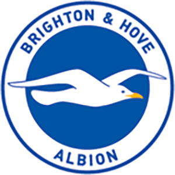

 Brighton & Hove Albion Football Club - CBM
1.1
A história do por que o "brighton"
1.2
Começo da season
1.3
Incentivos de escolha
1.4
Pat1des, o Manager
2.1
O decorrer da season
2.2
Altos & Baixos
2.3
Eliminações
2.4
Novas contratações